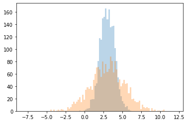

Latent Gaussian Density Estimation¶
import jax.numpy as jnp
from jax import random
from melvin import LaplaceApproximation
import jax
import matplotlib.pylab as plt
from functools import partial
jax.config.update("jax_enable_x64", True)
WARNING:absl:No GPU/TPU found, falling back to CPU. (Set TF_CPP_MIN_LOG_LEVEL=0 and rerun for more info.)
SEED = random.PRNGKey(220)
N_ROWS = 2000
LATENT_MEAN = 3.0
LATENT_STD = 1.0
NOISE_STD = 2.0
SEED, _seed_1, _seed_2 = random.split(SEED,3)
y_latent = jax.random.normal(key=_seed_1, shape=(N_ROWS,))*LATENT_STD + LATENT_MEAN
y = y_latent + jax.random.normal(key=_seed_2, shape=(N_ROWS,))*NOISE_STD
bins = jnp.linspace(-8,12,100)
plt.hist(y_latent, bins=bins, alpha=0.3)
plt.hist(y, bins=bins, alpha=0.3)
plt.show()

class GaussianDensityEstimator(LaplaceApproximation):
param_bounds = jnp.array([[jnp.nan, jnp.nan], [0, jnp.nan]])
def model(self, params, X):
mu = params[0]
std_latent = params[1]
std_noise = self.fixed_params[0]
std = jnp.sqrt(std_latent**2 + std_noise**2)
return jnp.array([mu, std])
def log_prior(self, params):
# Uninformative priors on both parameters
mu = params[0]
std_latent = params[1]
mu_log_prior = jax.scipy.stats.norm.logpdf(mu, loc=0.0, scale=100.0)
std_latent_log_prior = jax.scipy.stats.expon.logpdf(std_latent, scale=100.0)
return mu_log_prior + std_latent_log_prior
def log_likelihood(self, params, y, y_pred):
mu = y_pred[0]
std = y_pred[1]
log_like = jax.scipy.stats.norm.logpdf(y, loc=mu, scale=std)
return jnp.sum(log_like)
initial_params = jnp.array([5.0, 5.0])
gaussian_density_estimator = GaussianDensityEstimator(
name="Gaussian Density Estimator",
initial_params=initial_params,
fixed_params=jnp.array([NOISE_STD]),
y=y
)
print(gaussian_density_estimator)
/usr/local/lib/python3.9/site-packages/scipy/optimize/_minimize.py:524: RuntimeWarning: Method BFGS does not use Hessian information (hess).
warn('Method %s does not use Hessian information (hess).' % method,
Laplace Approximation: Gaussian Density Estimator
Fixed Parameters: [2.]
Fit converged successfully
Fitted Parameters:
[
3.024760513634774 +/- 0.04994854761415938,
0.9948447428567768 +/- 0.07930368410107926, [Lower Bound = 0.0]
]
Log Posterior Prob = -4455.420834696257
SEED, _seed = random.split(SEED,2)
samples = gaussian_density_estimator.sample_params(prng_key = _seed, n_samples = 10000, method="laplace")
plt.hist2d(samples[:,0], samples[:,1], bins=(30,30), cmin=1)
plt.axhline(LATENT_STD, color="r", label="True parameters")
plt.axvline(LATENT_MEAN, color="r")
plt.xlabel("Latent Mean")
plt.ylabel("Latent Std")
plt.colorbar()
plt.legend()
plt.show()

SEED, _seed = random.split(SEED,2)
importance_samples = gaussian_density_estimator.sample_params(prng_key = _seed, n_samples = 10000, method="gaussian_importance")
plt.hist2d(importance_samples[:,0], importance_samples[:,1], bins=(30,30), cmin=1)
plt.axhline(LATENT_STD, color="r", label="True parameters")
plt.axvline(LATENT_MEAN, color="r")
plt.xlabel("Latent Mean")
plt.ylabel("Latent Std")
plt.colorbar()
plt.legend()
plt.show()

print(gaussian_density_estimator.evaluate_samples(samples))
print(gaussian_density_estimator.evaluate_samples(importance_samples))
-4459.117284800407
---------------------------------------------------------------------------
LinAlgError Traceback (most recent call last)
<ipython-input-8-d6d2a4752ce1> in <module>
1 print(gaussian_density_estimator.evaluate_samples(samples))
----> 2 print(gaussian_density_estimator.evaluate_samples(importance_samples))
/workspaces/melvin/src/melvin/laplace.py in evaluate_samples(self, samples)
259 log_posterior_samples = -1 * objective_func_map(samples)
260 average_log_posterior = jnp.mean(log_posterior_samples)
--> 261 entropy_estimate = sample_entropy_estimate(samples)
262
263 return average_log_posterior + entropy_estimate
/workspaces/melvin/src/melvin/laplace.py in sample_entropy_estimate(x)
33 est_samples = x[n_samples // 2 :, :].T
34
---> 35 kde = gaussian_kde(dataset=kde_samples)
36 return jnp.mean(-1 * jnp.log(kde(est_samples)))
37
/usr/local/lib/python3.9/site-packages/scipy/stats/kde.py in __init__(self, dataset, bw_method, weights)
204 self._neff = 1/sum(self._weights**2)
205
--> 206 self.set_bandwidth(bw_method=bw_method)
207
208 def evaluate(self, points):
/usr/local/lib/python3.9/site-packages/scipy/stats/kde.py in set_bandwidth(self, bw_method)
554 raise ValueError(msg)
555
--> 556 self._compute_covariance()
557
558 def _compute_covariance(self):
/usr/local/lib/python3.9/site-packages/scipy/stats/kde.py in _compute_covariance(self)
566 bias=False,
567 aweights=self.weights))
--> 568 self._data_inv_cov = linalg.inv(self._data_covariance)
569
570 self.covariance = self._data_covariance * self.factor**2
/usr/local/lib/python3.9/site-packages/scipy/linalg/basic.py in inv(a, overwrite_a, check_finite)
961 inv_a, info = getri(lu, piv, lwork=lwork, overwrite_lu=1)
962 if info > 0:
--> 963 raise LinAlgError("singular matrix")
964 if info < 0:
965 raise ValueError('illegal value in %d-th argument of internal '
LinAlgError: singular matrix
SEED, _seed = random.split(SEED,2)
def get_pdf(params, x):
return jax.scipy.stats.norm.pdf(
x,
loc=params[0],
scale=params[1]
)
x = jnp.linspace(-3,10,100)
y_pdf = get_pdf(gaussian_density_estimator.params.x, x)
y_pdf_samples = gaussian_density_estimator.sample_params_map(
prng_key = _seed, n_samples = 300, func=get_pdf, args=(x,), method="laplace"
)
y_pdf_low = jnp.percentile(y_pdf_samples, q=5, axis=0)
y_pdf_upp = jnp.percentile(y_pdf_samples, q=95, axis=0)
plt.hist(y_latent, bins=x, alpha=0.3, density=True, label="Latent Samples")
plt.hist(y, bins=x, alpha=0.3, density=True, label="Observed Samples")
plt.plot(x, y_pdf, color="k", label="Fitted Latent Distribution")
plt.fill_between(x, y_pdf_low, y_pdf_upp, color="k", label="90% Confidence Interval", alpha=0.3)
plt.legend()
plt.show()